1004D40 ENGINE - POSITION ON STAND AND REMOVE
- Path
- Procedures > 10 ENGINE > 1004 ENGINE AND POWER UNIT > 1004D REMOVE ENGINE AND WASH > 1004D40 ENGINE - POSITION ON STAND AND REMOVE
- Kind
- repair procedure (removal / refitting; the operation number is the code)
- Applies to
- engines: 3.0 24V V6, 2.0 16V JTD, 2.2 16V JTD; all production periods
- Interactive page
- https://sloeber94.github.io/elrnDB-fUlss/en/#/179006842
Applies to: engines: 2.0 16V JTD, 2.2 16V JTD; all production periods
Dismantling
Position the engine on a suitable workbench.
1. Position tool (1a) on the engine block beside the heat exchanger and tighten the bolts (1b).
Description | Code | Function | |
|---|---|---|---|
1a | Brackets | 1.861.001.040 | Engine overhaul stand support |
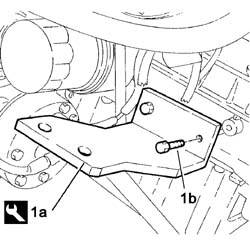
Applies to: engines: 2.0 16V JTD, 2.2 16V JTD; all production periods
1. Undo the bolts (1a) and remove the intermediate driveshaft support (1b).
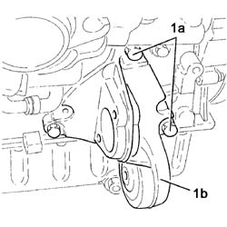
Applies to: engines: 2.0 16V JTD, 2.2 16V JTD; all production periods
- Prepare an adaptor plate as shown in the drawing in the following figure
Applies to: engines: 2.0 16V JTD, 2.2 16V JTD; all production periods
1. Fit tool (1a), interposing bracket (1b) made previously, and tighten bolts (1c).
Description | Code | Function | |
|---|---|---|---|
1a | Brackets | 1.861.001.040 | Engine overhaul stand support |
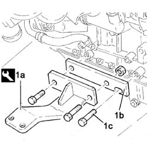
Applies to: engines: 2.0 16V JTD, 2.2 16V JTD; all production periods
1. Loosen bolt (1a) and use a box wrench (1b) of appropriate size to turn the cam tensioner (1c) anticlockwise until the 4 mm dia pin (1d) fits into the reference hole on the tensioner.
2. Release and remove the auxiliary shaft drive belt.
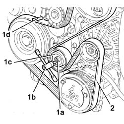
Applies to: engines: 2.0 16V JTD, 2.2 16V JTD; all production periods
1. Undo front bolts (1a) and rear bolts (1b) and remove alternator (1c).
Applies to: engines: 2.0 16V JTD, 2.2 16V JTD; all production periods
1. Unscrew bolts (1a) securing the exhaust gas recovery pipe (1b) for the EGR.
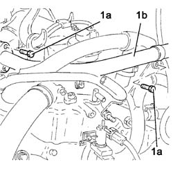
Applies to: engines: 2.0 16V JTD, 2.2 16V JTD; all production periods
1. Unscrew the remaining nut (1a) and nut (1b) securing exhaust gas recovery pipe (1c) for EGR.
2. Loosen the band and disconnect the coolant inlet pipe from the heat exchanger for the EGR system.
3. Disconnect the vacuum pipe from the EGR valve.
4. Unscrew nuts (4a) and remove EGR valve (4b) complete with pipe (4c) and heat exchanger (4d).
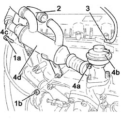
Applies to: engines: 2.0 16V JTD, 2.2 16V JTD; all production periods
1. Undo the connector (1a) and disconnect the oil supply pipe to the turbocharger (1b) from the crankcase.
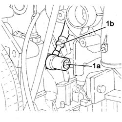
Applies to: engines: 2.0 16V JTD, 2.2 16V JTD; all production periods
1. Loosen collar (1a) and disconnect sump oil return pipe (1b) from the turbocharger (1b), turbo side.
2. Undo the bolt fixing the turbocharger to the mounting bracket.
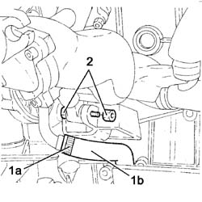
Applies to: engines: 2.0 16V JTD, 2.2 16V JTD; all production periods
1. Unscrew nuts (1a) with spacers (1b) then remove the exhaust manifold (1c) with turbocharger (1d) and gasket (1e).
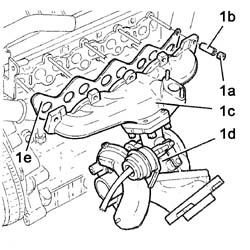
Applies to: engines: 2.0 16V JTD, 2.2 16V JTD; all production periods
1. Use a hydraulic lift (1a) to anchor the attachment points and position on an overhaul stand (1b), securing with bolts of appropriate size (1c).
Description | Code | Function | |
|---|---|---|---|
1a | Overhaul stand | 1.861.000.000 | Engine mount |
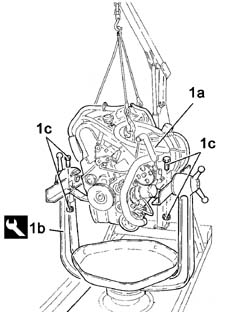
Applies to: engines: 2.0 16V JTD, 2.2 16V JTD; all production periods
Reassembly
- Anchor the engine to the attachment points, ensuring that all the cables are under tension and do not bind.
- Undo the fixing bolts and remove the engine from the overhaul stand.
Description | Code | Function | |
|---|---|---|---|
- | Overhaul stand | 1.861.000.000 | Engine mount |
- Position the engine on a suitable workbench.
1 Fit exhaust manifold (1a) with turbocharger (1b) and gasket (1c) then tighten nuts (1d) with spacers (1e) and tighten to the specified torque.
Value daNm | Fastening | Component | dia | |
|---|---|---|---|---|
1d | (-) | Nuts | TURBOCHARGER - EXHAUST MANIFOLD - HOSE CONNECTED TO EXHAUST PIPE - R.R. | - |
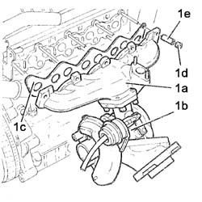
Applies to: engines: 2.0 16V JTD, 2.2 16V JTD; all production periods
1. Tighten the turbocharger bolt to the bracket and tighten to the specified torque.
Value daNm | Fastening | Component | dia | |
|---|---|---|---|---|
1 | 3.0 | Bolt | TURBOCHARGER - EXHAUST MANIFOLD - HOSE CONNECTED TO EXHAUST PIPE - R.R. | - |
2. Connect the oil return pipe to the sump (2a) to the turbocharger and tighten collar (2b).
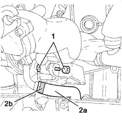
Applies to: engines: 2.0 16V JTD, 2.2 16V JTD; all production periods
2. Connect the oil return pipe to the sump (2a) to the turbocharger and tighten collar (2b).
Value daNm | Fastening | Component | dia | |
|---|---|---|---|---|
1b | 4.5 | Connector | ENGINE - Position on stand and remove | - |
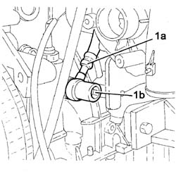
Applies to: engines: 2.0 16V JTD, 2.2 16V JTD; all production periods
1. Fit EGR valve (1a) with pipe (1b), heat exchanger (1c) and secure by tightening nuts (1d) to the specified torque.
Value daNm | Fastening | Component | dia | |
|---|---|---|---|---|
1d | 3.0 | Nuts | EXHAUST GAS/WATER HEAT EXCHANGER FOR E.G.R. system - R.R. | - |
2. Connect the vacuum pipe to the EGR valve.
3. Connect the coolant supply pipe to the EGR heat exchanger and tighten the band.
4. tighten the bolt (4a) and nut (4b) securing exhaust gas recovery pipe for EGR.
- Then tighten the remaining bolts securing the EGR exhaust gas recovery pipe.
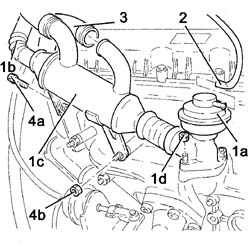
Applies to: engines: 2.0 16V JTD, 2.2 16V JTD; all production periods
1. Position the alternator (1a), screw in bolts (1b) and (1c) then tighten to the specified torque.
Value daNm | Fastening | Component | dia | |
|---|---|---|---|---|
1d | 4.1 | Bolts | ALTERNATOR - R.R. | - |
Value daNm | Fastening | Component | dia | |
|---|---|---|---|---|
1c | 3.9 | Bolts | ALTERNATOR - R.R. | - |
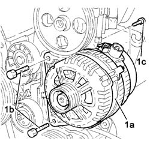
Applies to: engines: 2.0 16V JTD, 2.2 16V JTD; all production periods
Fit a new auxiliary drivebelt to the pulleys in accordance with the layout in the figure, finishing with the mobile tensioner:
- (1a) crankshaft pulley
- (1b) air conditioner compressor pulley
- (1c) alternator pulley
- (1d) cam roller
- (1e) power steering pump pulley
- (1f) mobile tensioner roller
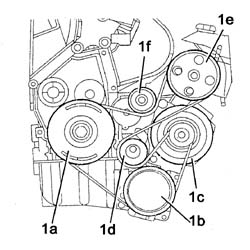
Applies to: engines: 2.0 16V JTD, 2.2 16V JTD; all production periods
1. Use an appropriate box wrench (1a) to turn the cam tensioner (1b) until the reference pin (1c) can be withdrawn, then tighten bolt (1d) to the specified torque without altering the cam roller position.
Value daNm | Fastening | Component | dia | |
|---|---|---|---|---|
1b | 4.5 | Bolts | Engine component single belt FIXED TENSIONER - R&R with belt removed | - |
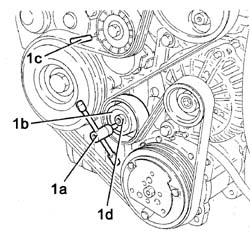
Applies to: engines: 2.0 16V JTD, 2.2 16V JTD; all production periods
- Unscrew the bolts and remove the brackets and adaptor plate used to anchor the engine to the overhaul stand from the engine block.
1. Fit intermediate drive shaft mount (1a) and secure by means of bolts (1b).
Value daNm | Fastening | Component | dia | |
|---|---|---|---|---|
1b | 4.5 | Bolts | BEARING MOUNT for intermediate driveshaft - R&R | - |
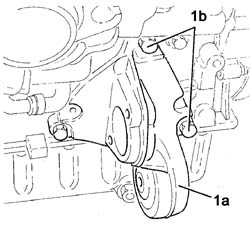
Topics that link to this page (7)
- 1012A23 LOWER ENGINE BLOCK - R R CLEAN MATING SURFACES AND APPLY SEALANT WITH ENGINE REMOVED
- 1020A24 CRANK CASE OIL SUMP - R + R CLEAN SEALS FOR SEALANT APPLICATION WITH ENGINE REMOVED
- 1020D17 ENGIND FRONT COVER - R R
- 1024A10 CRANK SHAFT - R + R WITH ENGINE REMOVED - CHECK MAIN AND CONNECTING ROD BEARINGAND REPLACE IF NECESSARY
- 1028H14 PISTON CONNECTING ROD SET - R.R. WITH ENGINE AND CYLINDER HEAD(S) REMOVED
- 1084B14 ENGINE OIL PUMP - R+R WITH POWER UNIT REMOVED
- 1088C20 WATER PUMP - R + R WITH ENGINE REMOVED